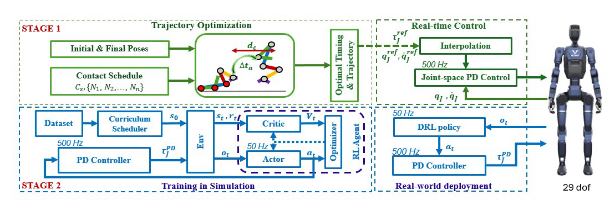

Getting-up control, or fall recovery, is of particular importance for humanoid robots operating in real-world environments. Achieving such behaviors that are simultaneously fast, optimal, and robust has been challenging tasks. In this paper, we propose a hierarchical framework consisting of trajectory optimization (TO) and deep reinforcement learning (DRL), where each stage addresses distinct challenge. In the first stage, TO for full-body dynamics is employed to generate optimal reference motions across consecutive contact phases that recover the robot to a squat posture while respecting hardware limitations and kinematic constraints. These references encode optimal whole-body coordination, phase timing, and squat configurations. In the second stage, DRL is designed to address various challenges (i) fast standing up from diverse postures, (ii) efficient contact transition under hard impact (iii) robust to different initial squat configuration,(iv) robustness to terrain uncertainties and unknown external disturbances. We validate our method on a full-size humanoid VinMotion 2, achieving fast and martial art getting up within only 1 − 2 seconds from different key initial lying positions. Extensive hardware experiments also validate the robustness of our method to various type of terrain (e.g. hard, pepple, grass) and external disturbances (e.g 5 lb ball throw). Extensive comparisons with model-based control methods such as Linear Model Predictive Control (LMPC) and Nonlinear Model Predictive Control (NMPC) are also provided to validate the efficienty of our DRL-based method.

Starting from a supine pose, the robot reaches its recovery pose before a ball dropped from 1.8 m hits the ground (~0.6 s), then takes ~0.5 s to reach walking height and ~0.5 s to fully balance.
@inproceedings{nguyen2026optimized,
title={Optimized and Robust Martial-Arts-Inspired Standing-Up Maneuvers for Full-Sized Humanoid Robots},
author={Nguyen, Chuong and Dao, Huy and Pham, Loc and Nguyen, Truong and Nguyen, Quan},
booktitle={IEEE-RAS International Conference on Humanoid Robots (Humanoids)},
year={2026}
}